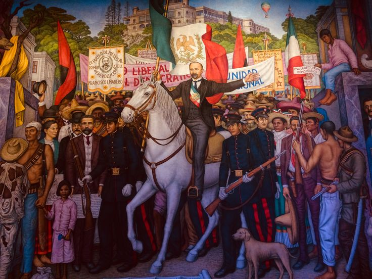

En el México del siglo XIX significaba la preservación de las instituciones tradicionales heredados del periodo colonial
Consideraban que el orden, la religión y la autoridad eran indispensables para mantener la estabilidad del pais
Ser liberal o conservador era una postura que definira la forma de organización del Estado
| Centralismo | Federalismo |
|---|---|
| El poder politico se concentraba en el gobierno | El poder se distribuye entre gobiernos federal y estados |
| Los Estados se convertian en departamentos subordinados al gobierno central | Los Estados conservan autonomia para gobernar asuntos internos |
| El presidente tenia amplias facultades para tomar decisiones | Existia un equilibiro entre los poderes federales y estatales |
| Buscaban mantener el orden mediante un gobierno fuerte y centrado | Favorecia la participación politixa de las entidades federativa |
Una vez concluida la lectura, realiza la actividad de evaluación haciendo clic en el siguiente botón.